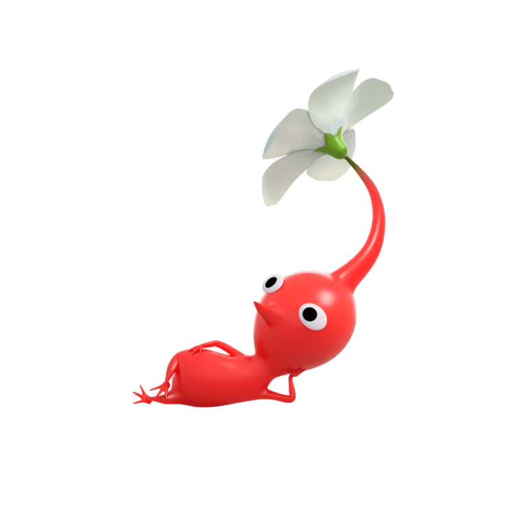
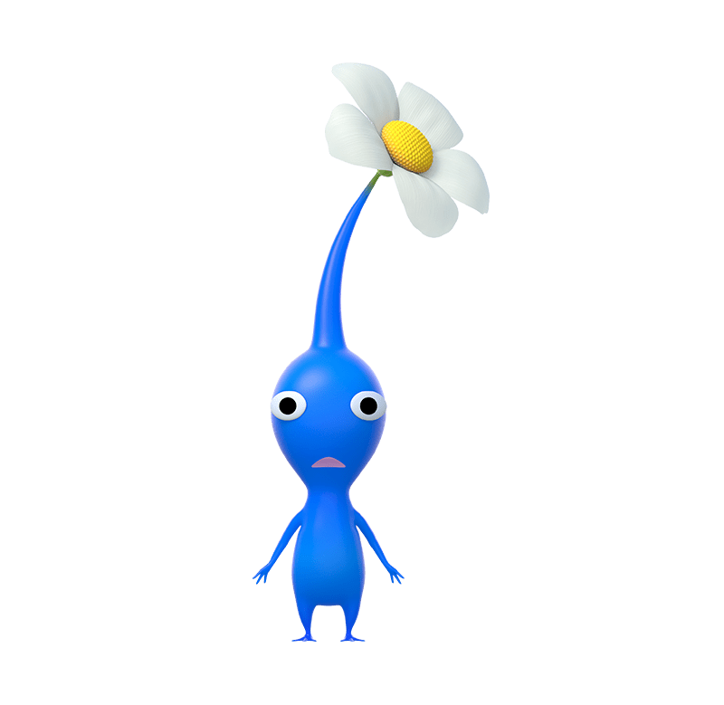
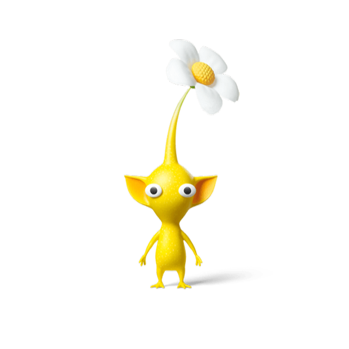
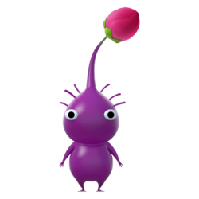

Red Pikmin have pointy noses and white flowers, and are present in all Pikmin games. They are resistant to fire and their attack strength is 1.5x stronger than most other types, making them good at combat.

Blue Pikmin have mouthlike gills and white flowers, and are present in all Pikmin games. They are resistant to water, making them the only type able to access submerged portions of areas where other Pikmin would drown.
/
Yellow Pikmin have large ears and white flowers, and are present in all Pikmin games. They can be thrown higher than other types, but their other unique abilities vary by game. In Pikmin, they are the only type that can carry Bomb Rocks. In Pikmin 2, Pikmin 3, Pikmin 4 and Hey! Pikmin, they are resistant to electricity (they can also conduct electricity in Pikmin 3 and Hey! Pikmin).

Purple Pikmin have short hairs, magenta flowers, and are bulkier than other Pikmin types. They weigh 10 times as much as other Pikmin types, are slower than other types, can carry 10 times the weight of other types, and can attack with a strong pound capable of stunning enemies.